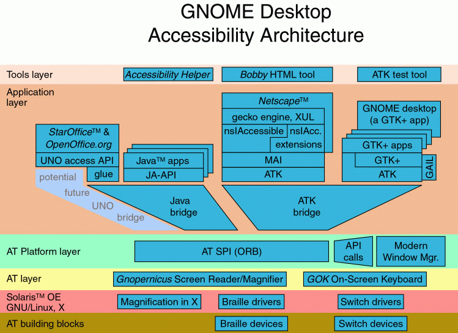

Now Mozilla has accessibility feature only on Windows, it is using Microsoft Active Accessibility (MSAA) API. On Linux and Mac, Mozilla has not accessibility feature. Now there is a way to implement accessibility feature on Linux/Unix, in fact, it is to implement mozilla's accessibility feature on GNOME2 desktop.
Accessibility is an important feature of GNOME2.0, and accessibility is a built-in feature in GNOME2.0, GNOME2 is built based on GTK2, GTK2 provides accessibility using ATK. Up to now, the control panel of GNOME2 already has full accessbility feature through using ATK. and GNOME is also an open source project. For more information, please visit The GNOME Accessbility Project.
ATK stands for GNOME Accessibility Tool Kit. The ATK library provides a set of interfaces for accessibility. By supporting the ATK interfaces, an application or toolkit can be used with such tools as screen readers, magnifiers, and alternative input devices. ATK 1.11.0 has been released. It has these features:
For more information, please visit ATK Library Reference Manual and ATK Widget Implementation Proposal.

As we can see from the diagram, the implementation of GNOME2 accessbility is divided into different layers, other layers are finished by GNOME.org. After nsIAccessible, nsIAccessible Extensions and MAI are finished, Mozilla has accessibility feature on GNOME; now Sun is working on it.
After the accessibility feature is finished in Linux. Mozilla can not build successfully without ATK. The compiling dependency is very similar with Christopher Blizzard's gtk2 porting work, because ATK is included in GTK2. For more information about gtk2 work, please visit bug gtk2 port.
If the GNOME2 desktop is available, Mozilla can run with accessibility
feature in GNOME2 desktop.
If the GNOME2 desktop is not available, but the relative libraries are avaiable,
Mozilla can run with accessibility feature in other desktops, for example:
Gnome1.4, KDE.
If the relative libraries are not avaiable, Mozilla can run, but it has no
accessibility feature.
MAI, Mozilla ATK Implementation, exposes nsIAccessbile (and nsIAcc.extentions) through ATK interface. MAI does similar work for ATK interface as Accessible (source is located in widget/src/windows) does for MSAA. When accessible events generated in mozilla, the events needs to be reported, MAI creates proper ATK objects and emits ATK signals for those events. When it receives accessible commands through ATK interface, MAI propagates the commands to mozilla though nsIAccessbile (and nsIAcc.extentions). In this way, n application using AT technologies can communicate with Mozilla.
Mozilla implements accessibility feature on Windows, it is bridging from nsIAccessibile to MSAA. In order to make mozilla accessible in Linux, we should bridge from nsIAccessbile to ATK, comparing with MSAA, ATK has more content, the content of current nsIAccessible is not enough, we should extend it, please visit ATK Library Reference Manual, and in order to extend nsIAccessbile, a bug is opened in bugzilla, please visit bug Check in additional IDL files contributed by Sun.
According to Mozilla Development Roadmap, we made the schedule for this project. Because the developers are working on the trunk, besides the good patch, quick review and superreview are also helpful for keeping on this schedule:
May 01, finish Linux accessbility framework.
According to the roadmap, May 01 is mozilla1.1 alpha freeze day
June 05, finish first part of content accessibility. According to the
roadmap, June 05 is mozilla1.1 beta freeze day
July 31, finish most of the content accessbility(except HTML table).
Accroding to the raodmap, July 31 is mozilla1.2 alpha freeze day
July 31, finish UI accessibility features
Sep. 02, finish content accessbility and finish major accessibility bug
fixes. Sep. 02 is pressumed mozilla1.2 beta freeze day
Sep. 23, finish all accessibility bug fixes. Sep.23 is presumed mozilla1.2
FCS freeze day
Oct. 31 Accessible browser with these features: Oct. 31 is presumed
mozilla1.3 alpha freeze day
Accessible content
Accessible UI
Accessible Java-plugin
framework for other plugins
keyboard navigation
theme support
w3c accessibility feature
future Accessible Messenger
future Accessible Composer
This schedule is very aggressive, in order to keep on the schedule, the developers need enough support from mozilla community.
Sun has setup a task force in China to implement the mozilla accessibility on GNOME, up to now the team has 7 members. The email address of the task force is browser-china-atf@sun.com
Team members are:
They are working on the API implementation together with Aaron Leventhal, of course, at the same time they are also working together with the whole mozilla community, because besides implementing these APIs, this task force is also working on general accessbility bugs, please visit the meta bug: Bugs for Sun's Beijing Mozilla Accessibility team to work on, it is used to trace general accessibility bug fixing job of this team.
If there is any question, please feel free to contact us, we will update the documentation by adding FAQ. Thanks a lot.